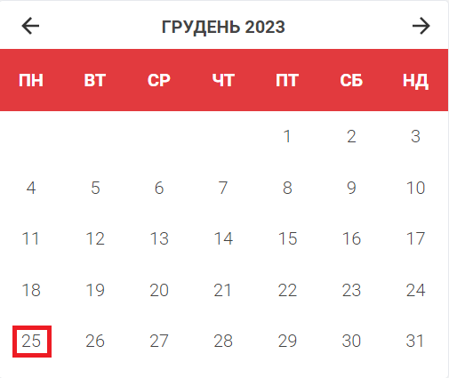

Цей сайт розкаже про святкування та події, які відбуваються кожного дня. Кожен відвідувач може отримати інформацію про різноманітні свята, які відзначаються в різних країнах світу, а також про національні та міжнародні святкування.
На головній сторінці сайту відображаються свята, що припадають на сьогоднішній день, а також короткий опис кожного свята. Також на сайті можна знайти календар свят, де можна переглянути святкування на будь-який день року.
Крім цього, сайт також пропонує користувачам можливість створювати власний список свят, які вони хочуть відзначити, а також отримувати щоденні нагадування про ці свята через наш телеграм бот.
Весь контент на сайті представлений у зрозумілій та доступній формі, щоб користувачі могли швидко та легко знайти потрібну інформацію. Також на сайті регулярно додаватимуться нові свята та інформація про них, щоб користувачі могли завжди бути в курсі найновіших подій.
25 Грудня

Різдво — одне з найголовніших свят у християнській релігії. Вважається, що Ісус Христос народився на благо людства. Ця подія символізує повернення світу до духовності й чистоти, адже народився Спаситель у часи, коли панували ненависть, жадібність та лицемірство. Свято пов’язане з найтеплішими почуттями у серцях людей — родини збираються разом, діти й дорослі отримують подарунки, бо Різдво — час дарувати й ділитися. Різдво Христове для християн західного обряду та значної частини східних церков настає 25 грудня. Цей день є одночасно священним релігійним святом та всесвітнім культурним і комерційним явищем.
26 Грудня

26 грудня святкується День подарунків (Boxing Day). Свято найбільш популярне в тих країнах, які історично пов’язані з Англією (Канада, Нова Зеландія, Південно-Африканська Республіка, Австралія) та деяких європейських країнах. В Німеччині воно носить назву “Zweite Feiertag” або “Друге Святкування”.
